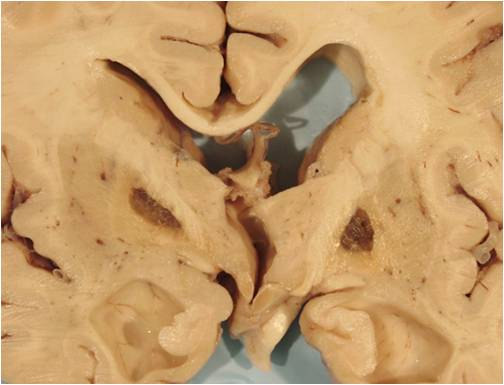

Bilateral lacunar infarcts in the basal ganglia

Microscopy
–
Cavities of tissue loss with scattered fat laden macrophages and surrounding gliosis.
Clinical features
–
Depending on their location they may be clinically silent or cause severe neurological impairment.
Previous
Next